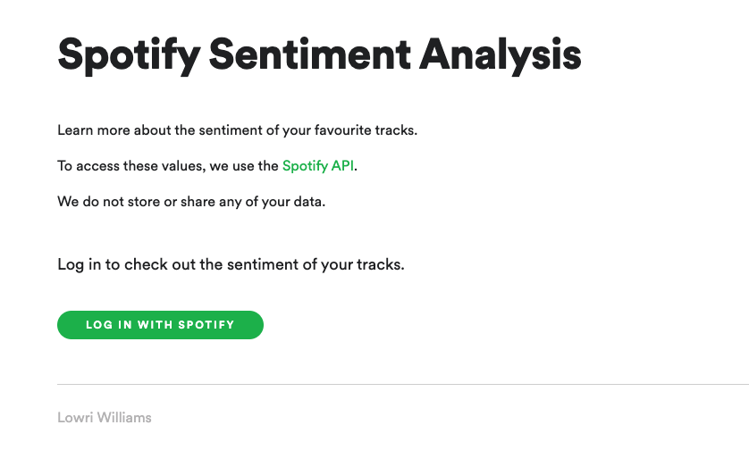
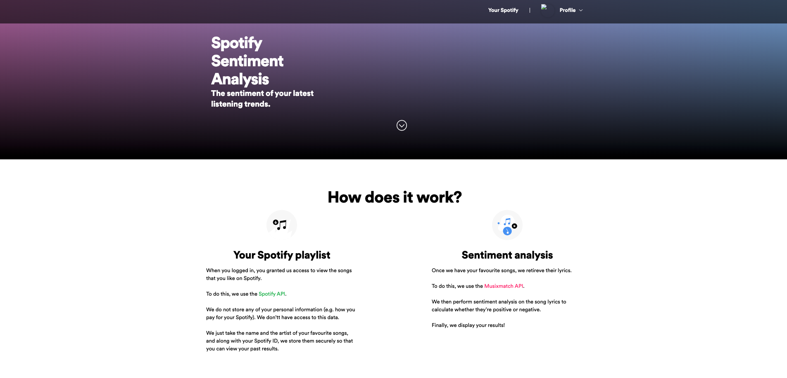
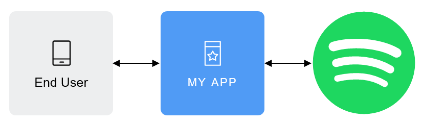
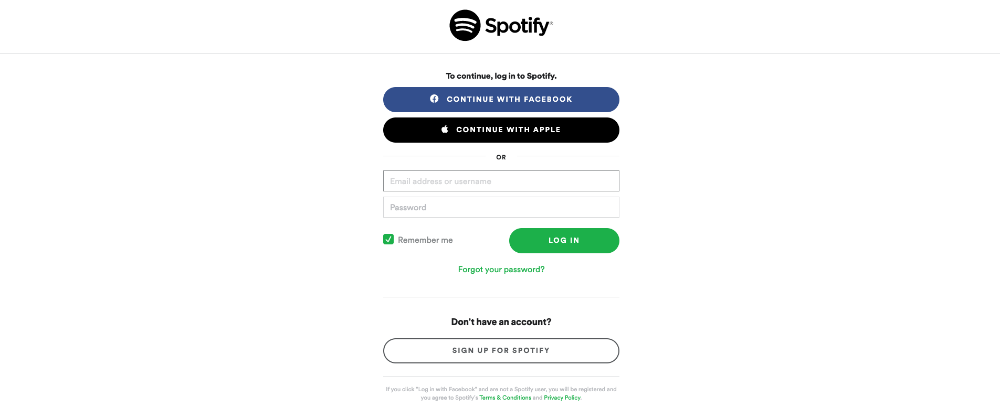
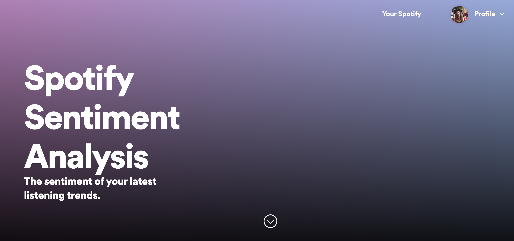

Have you ever wondered what kind of data surrounds the music you listen to? So many different music apps are applying sophisticated data science and
machine learning techniques to our music data and are getting pretty cool outputs. Spotify, for example, is one of the most popular apps and is powered by the music we listen to,
the songs we like, and the playlists we create and follow to produce a personalised product for its users and community.
When I looked at the data that Spotify collects, I noticed that they collect audio features from the
music itself. So the levels of acousticness, danceability, energy, tempo, etc. But the feature which stood out the most was audio valence.
Audio Valence: A measure from 0.0 to 1.0 describing the musical positiveness conveyed by a track. Tracks with high valence sound more positive (e.g. happy, cheerful, euphoric), while tracks with low valence sound more negative (e.g. sad, depressed, angry).
So, from this attribute, Spotify can generate playlists for us with more upbeat, positive songs, or more mellow and negative songs. Whereas this is clever,
I recently ran into some inaccurate results - I had sad songs in the positive playlist that Spotify had generated for me. I wondered what had decided to put it there.
If we look at the audio features surrounding the 80's classic 'When Doves Cry' by Prince, Spotify's results show that it's a lively song - which is true, it has a pretty funky beat! 🕺🏻🕊️
{"danceability": 0.729,
"energy": 0.989,
"loudness": -4.613,
"speechiness": 0.049,
"acousticness": 0.0102,
"instrumentalness": 0.0000445,
"liveness": 0.443,
"valence": 0.84,
"tempo": 126.47,
"duration_ms": 352906}
But there is a contradiction in terms of the valence score it's associated with (0.84 indicates a positive valence) and what the song lyrics express. Although
listeners can have their own interpretation of the meaning of lyrics, this song uses doves and purple violets, which are both well-known symbols for love, to express what was once before the constant arguments between a couple
who were in love. The following lyrics are just some examples which show the expression of heartbreak and sadness:
How can you just leave me standing?
Alone in a world that's so cold?
...
Why do we scream at each other?
This is what it sounds like when doves cry
Given this finding, I quickly became interested in the idea of whether we can gain even more insight into the valence of the music we’re listening to by diving deeper into the music itself and applying sentiment analysis to the lyrics of the songs in our playlists.
Sentiment Analysis: Automatically identifying opinions or sentiment expressed in text to determine whether the writer's attitude is positive, negative, or neutral.
In this case, I developed a Spotify Sentiment Analysis app where Spotify users can learn more about the sentiment of their songs.
This post talks about the development of the app. I tried to make the text as simple and as clear as possible while still providing technical details. Regardless, things might get a bit geeky. So hang tight and if you make it to the end, make sure to hit the
like button. But if you want to skip the tech-talk and go straight to using the app, head over to where it's hosted.
For those of you who are not familiar with the framework, Flask allows you to create web apps with Python. If I'm wanting to implement something
that looks nice, I'll turn to Flask and use a free Bootstrap theme as a base for the interface. That's really what Flask is for - it's designed to make getting started quick and easy, with the ability to
scale up to more complex apps.
In this part of the post, I decided to give a quick breakdown as to how I set up and build my Flask apps. I've used Flask several times now, but when I first used it, I noticed that the documentation was a
little confusing to get a quick grasp of. So, here's a quick and general explanation of how I do it.
Virtual Environment
Python uses virtual environments to maintain different versions of packages for different apps. You can set up different virtual environments for each app and
have control of the versions of the packages those apps use.
Head over to your terminal and navigate to wherever you want your Flask app's directory to live using cd name_of_directory. Here, we'll create a directory called spotify_sentiment_analysis
and then we'll navigate to it using cd.
The virtual environment is included in Python 3, so we'll create one without having to install anything. The first venv in the command is the name of the Python virtual environment package, and
the second is the virtual environment name that I'm going to use for this particular environment.
We should now have created a virtual environment. To be able to use it, we need to activate it and then install Flask in it using pip. To confirm that the virtual environment successfully installed Flask,
we can start the Python interpreter and import Flask.
No output is a good output and means that Flask was installed correctly and is ready to be used! 💡
Application Package
This application is going to exist in a package. What that means is that, in Python, a sub-directory that includes a __init__.py file is considered a package and can be imported. We're going
to create a package called app - this will host the application. To do that, make sure you're in the right directory (in this case, spotify_sentiment_analysis) and create a new directory called app.
Whilst we're at the terminal, we can create the empty file __init__.py.
The __init__.py file is then going to contain a script which creates the application object as an instance of class that Flask has imported from its package. The __name__ variable
passed to the Flask class is a predefined Python variable, which is set to the name of the module in which it's used. We then import the routes module, which doesn't exist yet but is imported after
we declare the app variable. This is because the routes module imports the app variable.
Routes
So, what goes in the routes module? The routes are all the different URLs that the Flask app implements. In Flask, application routes are written as Python functions called view functions
which are mapped to one or more route URL. Let's create the route module routes.py in our app directory and create a view function.
Here, we've created a view function. The @app.route above the function is called a decorator, which creates an association between the URL given as an argument and the function. In
this example, the decorator is associated with the /index URL. This means that when a web browser requests this URL, Flask is going to be able to include this function and pass the return
value of it back to the browser as a response. We'll see this in practise later.
To complete the application, we need to have a script at the top-level of the directory that defines the Flask app instance. I'll call it spotify_sentiment_analysis.py and include the following single
line that imports the application instance.
Just to make sure that we have the correct project structure, here's the current directory in our virtual environment.
Running Flask Applications
When it comes to running the app, Flask needs to be told how to import it by setting the FLASK_APP environment variable. We can then run the app using flask run.
The output from flask run indicated that the server is running on the IP address 127.0.0.1:5000, which is always the local address of your computer, otherwise called your localhost. In a web browser,
navigate to that URL. You'll notice that when the URL ends with /index, we'll see the simple message declared in our view functions. Change the URL to something else, like /home
and you'll see that the URL is not found because we didn't create it.
Templates
Templates help separate the presentation and design of the web application from the Python logic. In Flask, templates are written in separate files, usually HTML files, which are stored in a templates
directory inside the application package. Let's create the templates directory, making sure that we don't name it with a capital 't' otherwise it won't be recognised.
The directory should now look like the following structure.
Inside our templates directory, we can create HTML files which will not only present our nice web interface, but we'll also be able to parse variables and results from Python to our front end. Let's create an
HTML file called index.html and save it in our templates directory.
If you're familiar with HTML, you'll see that line 4 looks a little odd! Here, we're in fact parsing the variable user which we'll create in Python to be displayed on the front end. The {{ ... }}
is essentially a placeholder for your Python variables.
If we jump back to routes.py, we need to declare the variable user. We then convert the template into a complete HTML page using Flask's render_template() function. This function needs to
be imported. It takes the template filename and the declared Python variables, and returns the same template but with all the placeholders in it replaced with those variables.
We can also render conditional statements and for loops into our templates, but I won't be covering those here.
Let's assume we have set up several view functions and we want to be able to navigate from one page to another. Easy! We can navigate and direct to pages using HTML's href tag. But instead of
directing to the whole URL of your application, we can just use the URL we declared in our decorators, for example, /index.
Styling
The last thing I wanted to quickly cover when setting up a Flask app's environment is where to put the styling of our pages. By that I mean, where do we put the files that make our application look awesome! Well,
to do that we have to create one last directory in our app directory called static. In this directory, you'd expect to find all the CSS and image files that you need for your app. To connect the styling
or image files to your HTML, you just navigate your stylesheet to static/....
If you're still with me, great!
Following from the previous explanation of how to set up and start building a Flask app, I've gone ahead and created two view functions, one for my login page and the other
for my main page. The login page is where I want the user to be presented to my application and when they click the button, they'll authenticate themselves as a Spotify user using their credentials and access their own
music.

The main page is where the results of the sentiment analysis will be displayed. Now, I've been cheeky here and have gone to Spotify's site and saved the styling of the HTML of their main page after you login.
But I just wanted to declare that the copyright of their code and their design is their own, and the purpose of this project is for fun only.
You might notice that the image is not displayed where your Spotify profile picture would usually be. That's because that profile picture is stored by Spotify and is rendered to the page once you've logged in. The
same methodology applies here - we've not pulled any data yet, but once we do, we'll put the logged-in user's profile picture there to make it more personalised.

Thanks to Spotify's API, I'm able to extract and explore the songs I enjoy listening to - the ones that made me click that like button.
To gain access to your Spotify data using the API, you'll first need to do an initial setup using the following steps:
• Login to the Spotify for Developers website using your Spotify credentials.
• You'll be presented with your dashboard where you can 'create a new application'.
• From the application dashboard page, select 'edit settings'.
• Provide a name and description to your application.
• Then, set the redirect URI as the location you want the user to be directed to once the API
authenticates the access. As I'm using Flask, I'll set it as the main HTML page on my
localhost: http://127.0.0.1:5000/spotify_sentiment_analysis.
• Click save and make a note of your Client ID and Client Secret keys. We'll need these in the next step.
Now that we have our Flask environment setup, the beginning of a design, and our Spotify API keys, we can start accessing our music data. To have the end-user approve your app access to their Spotify data and features,
or to have your app fetch data from Spotify, you need to authorise your application. Spotify's authorisation guide describes how you can be
authorised in two ways:
• App Authorisation: Spotify authorises your app to access the Spotify Platform (APIs, SDKs and Widgets).
• User Authorisation: Spotify, as well as the user, grant your app permission to access and/or modify the user’s data.
Calls
the Spotify Web API require authorisation by your user. To get that authorisation, your application generates a call to the
authorisation endpoint, passing along a list of the scopes for which access permission is sought.
Here, we'll let the user authorise us access to their music data. We want it to be personalised to me and to others who want to use it, so it makes sense that we access individual user data.
Making authorised requests involves 3 parties: the Spotify server, your application, and the end-user data and controls:

Remember those keys you noted down from your Spotify dashboard? Here's where you'll need them. 🔑
First, let's declare the variables CLIENT_ID and CLIENT_SECRET as our the keys. These will be string type. We'll then set up some required Spotify URLs and server-side paraments. Pay particular attention to the
REDIRECT_URI. This is the redirect URI that you declared when you set up your keys in the previous section. Remember, this is the URL you want your user to be redirected to once they've authenticated. Lastly, we want to parse all of
the above information through to Spotify to retrieve the data.
We'll need to set up another view point. This time, the view point won't be returning a template. It will be parsing the API information and redirecting us to our
REDIRECT_URI. Also, note that we need to import redirect from the Flask library, as well as urllib and quote from urllib.parse. One last thing - we need to connect our button on our login HTML page to the authorisation
function. Head over to that file, and include /spotify_authentication in your href tag to reference the corresponding view point.
Altogether, our routes.py should now be looking something like this:
Now that the authentication is set up, what do we expect to see? Well, if you run your Flask app and click on the login button on your welcome page, you should be redirected to Spotify's authentication page! 🎉
The authentication page should look something like this. Once you fill in your Spotify details, you should then be redirected to your redirect URI and see your main page.

Now for the fun part. The user has authenticated access to their Spotify data - but how do we retrieve it?
When the authorization code has been received, you will need to exchange it with an access token by making a POST request to the Spotify Accounts service, this time to its /api/token endpoint: POST https://accounts.spotify.com/api/token.
The body of this request needs to contain some parameters, which are going to be included as base64-encodings in the header. In this case, we're going to import request from Flask's library and also the following libraries: base64, requests, and json.
Once you run your Flask app and the authentication token is successful, the response from the Spotify Accounts service has the status code 200 and the following JSON data:
{'country': 'GB', 'display_name': 'Lowri Williams', 'external_urls': {'spotify': 'https://open.spotify.com/user/1149952632'}, 'followers': {'href': None, 'total': 12},
'href': 'https://api.spotify.com/v1/users/1149952632', 'id': '1149952632', 'images': [{'height': None, 'url': 'https://scontent.xx.fbcdn.net/v/t1.0-1/p320x320/37337856_10155307217510946_6222490498947350528_o.jpg?_nc_cat=102&_nc_sid=0c64ff&_nc_ohc=KD5MjymlBtcAX8vHlVP&_nc_ht=scontent.xx&_nc_tp=6&oh=eac7ae2f14c7f373371fbcdce8439241&oe=5E993E5B', 'width': None}],
'product': 'premium', 'type': 'user', 'uri': 'spotify:user:1149952632'}
Cool! I can see my username, how many followers I have, the URL to my profile, my profile picture, and what type of account I have. Because this is a JSON object, I can assign the relevant information to
variables.
Remember the placeholder for the profile picture in the template of the main page? Well, we can parse the profile_url variable by placing {{ profile_url }} as the href
of the profile picture element in the HTML of the main page and render the template.

Ok, now to access the music data. We can retrieve the songs we have liked by directing our authentication token towards the user profile endpoint. The music data contains
all kinds of information. We're interested in when we added the song to our playlist, the name of the song, the name of the artist, the album cover, the URL of the song, and the ID of the track.
Again, as this is a JSON object, I can access the relevant information. As we're dealing with several songs, I'll create a dataframe to structure the data.
Once we have access to the songs in our Spotify playlists, we need their lyrics. Spotify doesn't have this feature - which is a shame. However, there are several other resources we can use to match lyrics to the
songs.
Musixmatch is a song lyric platform who's community is made of millions of music fans worldwide, building the best knowledge of lyrics, including translated lyrics. In
comparison to other song lyric sites, Musixmatch seemed to have the best results in terms of the correctness of the lyrics and the number of songs they covered. But the best thing about the site is that it has an
API.
Registering for the API key is quick and simple. Head over to their developer's page and sign up for an account. Their free plan lets you make 2k API calls each day and
retrieves only 30% of the lyrics in each song.
To gain the song lyrics, you'll first need to an initial setup using the following steps:
• Register for a Musixmatch developer account and login.
• You'll be presented with your dashboard where you can 'register for an API key'.
• Provide a name and description to your application.
• Click save and make a note of your API key.
Various techniques and methodologies have been developed to address automatically identifying the sentiment expressed in the text. In this post, I'll use VADER, a Python sentiment analysis library, to
classify whether the song lyrics in my playlist are positive, negative, or neutral.
A very simple approach to sentiment analysis is by using a list of words which have been labelled according to their semantic orientation. For example, we can assume that the word "good" has a positive valence,
whereas the word "bad" has a negative one. VADER uses this technique and provides a percentage score which represents the proportion of lyrics which fall in each sentiment category. It also provides a compound
score which is computed by summing the valence scores of each word and then normalising the scores to be between -1 (most extreme negative) and +1 (most extreme positive).
What's nice about VADER is the fact that we don't have to pre-process the text in any way! We can feed the song lyrics into VADER's sentiment function and retrieve the compound
scores for each song. Remember, Musixmatch allows access to only the first 30% of the lyrics for each song if you use the free API. So, granted, the results may not be as accurate as we'd like them to be.
First, we'll import musixmatch from Musixmatch's Python library and the SentimentIntensityAnalyzer function from VADER's Python library. I'll declare my Musixmatch API key, initialise the sentiment
analyser from VADER, and then iterate over the song names and artists from the dataframe, parsing them through Musixmatch's lyrics matcher. I'll then calculate whether the compound sentiment score is
above or beneath the thresholds so that we can assign them with the positive, negative, or neutral label.
Once I've retrieved the compound scores for each of the songs in my playlist, I can start thinking about how to visualise the results. One of my favourite charts to use recently is radar charts, or web or spider charts.
For those of you who don't know, a radar chart is a two-dimensional chart type designed to plot one or more series of values over multiple variables. Each variable has its own axis, and all axes are joined in
the centre of the figure.
Let's assume we want to graph the monthly average compound score for positive, negative, and neutral songs. I can calculate the monthly average sentiment score by grouping my dataframe by the Date column
and averaging the compound scores. I can then produce the following radar chart using ChartJS.
Cool! Out of the 320 songs I have in my playlist, we can see that I listen to a mix of positive and negative songs. What's interesting is that in December 2019, I liked more positive music. That could probably
be explained by the Christmas jingles I must've been listening to. I seem to very rarely listen to music that can be classified as expressing neutral sentiment. As I'm writing this (end of April 2020), it seems that
I've been listening to more positive music.
What else can we do?
We can extract the overall top-scoring positive and negative tunes and put them in a nice looking scorecard. The cover image of the song can also be extracted from the data collected from Spotify.
We can also compare the sentiment analysis results with Spotify's audio valence scores. We can parse the IDs for each of the tracks from my playlist and parse them through the audio features endpoint. If we average the scores for all songs classified as positive, negative, or neutral, we can compare both measures using a simple bar chart. What's promising is that, although we're applying sentiment analysis on 30% of the lyrics of a song, the results appear to be relatively similar to Spotify's audio valence scores.
So, what have I learnt from this analysis?
It's been really interesting to gain insight into the music I listen to, as well as applying sentiment analysis
on the song lyrics - my music taste seems to be more positive than I thought it was! What I might look at in a future post is how to extract keywords from the song lyrics. This opens the door to other natural language processing projects, where I can look into using machine
learning to classify songs based on what they're about.
This project is something I really enjoyed doing. So, I went ahead and further expanded the Flask app to include some other features. If you want to see more about the sentiment of your songs, head over to
where it's hosted.
If you enjoyed following this post, don't forget to like and share or show kudos by buying me a coffee!